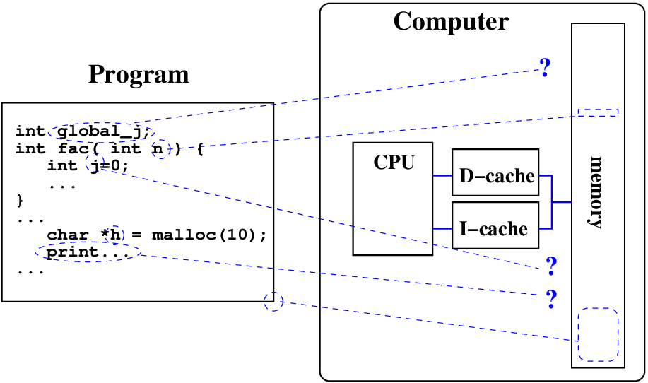
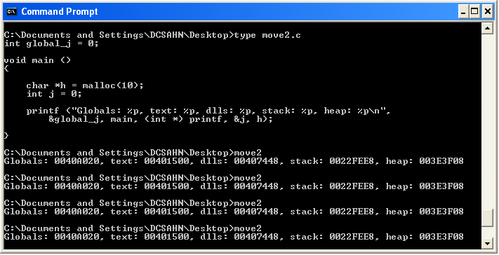

Introduction
We have seen how complex systems can give rise to insecurity. This complexity can just as easily be in the internal architecture of the computer, not the internal architecture of the application. Given complex computer architectures it is difficult to make a secure system; there are so many interfaces and APIs to consider. In addition, there are some computer-architecture based attacks that somehow transcend the attack surfaces that come about through interfaces and APIs.
They still come about through complexity but the complexity is about the internal architecture of the computer, not the internal architecture of the application. I’m talking about buffer overflows, heap overflows and so on.
Descent into the darkness...
There is a simple model of processes/programs, which goes something like this:
You have programs, and their data, which are found in the memory of a computer. Some computers have separate program and data space[^1], but most commonly these days, memory chips hold both instructions and data, although the corresponding memory caches may not. The resultant architecture is called a modified Harvard architecture.
Sounds obvious enough, but it turns out that there are a wide range of attacks on programs or processes, based on their arrangement in the memory chips of a computer.
When we program in a high-level language, we are insulated from these details: we might have a program with some variables:
int global_j;
int fac( int n ) {
int j=0;
if n=0 then
return 1
else
return n\*fac(n-1)
}
...
char \*h=malloc(10);
global_j=5;
print(fac(global_j));
...
This form of the program (the source form) shields us from the details of the locations of the program and the variables. For the program to run, we do not particularly care where in memory the program or data are stored - we are mostly just concerned that they are stored somewhere.

However as I mentioned before, there are attacks that start from knowledge of the locations in memory where such things are stored. In class we will look at some of these attacks, but in the meanwhile, just accept that with knowledge of the memory usage of a process, it might be possible for an attacker to devise an attack.
Programs have various uses for program memory, and generally put things together by use. So if you know where one global variable is, you can assume the others will be nearby.
-
Globals: for global variables such as the variable
global_jin the program above. -
Text: for the program code such as the function
facin the program. -
Dlls: for shared library functions such as the function
print. -
Stack: for temporary/local variables (
n,j), and function management. -
Heap: for dynamically created variables such as the variable
hin the program above.
This terms globals, text, dll, stack and heap are common and kind of historical. Here is a small program which prints out addresses of the program code, and variables of different types:

With this program, in this particular environment (WinXP), the locations of the items are the same every time we run the program. Here is the program:
int global_j = 0;
void main () {
char \*h = malloc(10);
int j = 0;
printf (Globals: %p, text: %p,
dlls: %p, stack: %p, heap: %p\n,
&global_j, main, (int \*)printf, &j, h);
}
Note that the address of a variable j is given as &j, and memory is
malloc’ed, and we have both global and local variables.
Address Space Layout Randomization
In order to reduce the likelihood of a successful memory attack on a program, the designers and builders of operating systems have been developing various schemes to make things difficult. One of the simplest schemes, is to randomize memory locations, each time the program runs. This is called ASLR (Address Space Layout Randomization), and is one of a number of techniques for improving an application’s robustness against attacks.
Unfortunately, different operating systems use different approaches.
For example, when I recently tried some GNU+linux systems, I found that on one of them (with the particular compiler, OS and configuration they had) the OS randomized the set {dlls,stack,heap}, omitting to randomize global variables and the text segment. Another experiment involving Solaris only randomized {stack}. MacOSX randomized {globals,text} - it may not bother with the stack for other reasons (BSD based computers like Macs have stacks arranged with no execution possible on the stack). WinXP did nothing.
More modern versions of Windows (Win7) randomized everything, but, only if you specifically asked for it, and if your program was compiled to support such randomization (i.e you had to opt-in, rather than opt-out). To me this seemed like a bad choice of fail-safe defaults, but more wiser Windows people than me tell me that many Windows applications would break if you turn on ASLR. Most of the OS itself runs with ASLR[^2].
If you wish to try this yourself using gcc, remember to tell the compiler that you want to generate position independant code:
gcc -pie -fPIC -o move3 move3.c
I have summarized the results of my experiments below:
| OS | Globals | Text | Dlls | Stack | Heap |
|---|---|---|---|---|---|
| Linux | Y | Y | Y | Y | Y |
| Linux sma0 | - | - | Y | Y | Y |
| Solaris sunfire | - | - | - | Y | - |
| OSX - old | Y | Y | - | - | - |
| OSX - new | Y | Y | Y | Y | Y |
| WinXP | - | - | - | - | - |
| Win7 | Y | Y | Y | Y | Y |
Yay for Windows 7! Except why-oh-why is it opt-in instead of opt-out?
A lesson to be learnt from all of this is encapsulated in the monster mitigation rule from OWASP: Lock down your environment. If you were building an application, and you were concerned with security with the application, at some stage you should audit the environment - what is the compiler? OS? What properties (i.e. ASLR) are operating? Are they actually working? Do not believe sales brochures - I am afraid that you actually have to test the environment.
Protecting the stack
Another aspect of memory management from a security viewpoint is protecting the stack from an attacker. As we saw last week, it is possible for an attacker to overwrite important values on a stack by overflowing a buffer. As a result of this overflow, one of the early attacks then led to running a program stored on the stack in that buffer!
To prevent against this sort of attack, there are various methods, including
-
preventing execution of data as a program (In windows this is called DEP, and actually is in WinXP).
-
preventing buffers from overflowing into sensitive areas of the stack.
The first point is something that the OS can control - if it disables execution in the memory used for stack (as in BSD).
The second point is often managed by compilers, with help from friendly OS’s. Various techniques are used, but one of the most common revolves around the use of a sacrificial variable called a canary, placed just above the programs/processes data/variables, and just below the sensitive areas of the stack. Consider the following function:
int f(char \* outside) {
char buf[10];
strcpy( buf,outside );
}
The sensitive areas come into play at the time a function returns. If a buffer has been over-flowed, then the canary also gets changed or overwritten, and later when the function returns things start going bad. During normal function returns, the processor executes instructions like the following:
** ** ...
call strcpy
leave
ret
Code is inserted into the programs to check the value of the canary just before the function returns. In the following code we see a canary being checked just before a function returns:
** ** call strcpy
movl -4(%ebp), %edx
xorl %gs:20, %edx
je .L3
call \_\_stack_chk_fail
.L3:
leave
ret
The detail of the extra code is not too important, but what it does is
check that the canary has the same value as found in memory location
%gs:20, and if not it calls a system function stack_chk_fail.
Both the GNU compilers (gcc) and the Windows compilers (like Microsoft Visual C++) do this sort of stack protection. Sure - it slows down the program a very small amount, but the extra safety is worth gold.
Defences...
Check inputs, check outputs, recheck. Build using packages, dont re-invent the wheel. Defensive programming, turn on stackguard etc....
We have seen some methods used to mitigate memory based attacks on applications. Again, the samples shown are only the tip of the iceberg. A lesson to be learnt is to: Lock down your environment.
[^1]: ... called the Harvard architecture...
[^2]: If you want to experiment with your own Windows ASLR features, you can find EMET and procexp.exe.